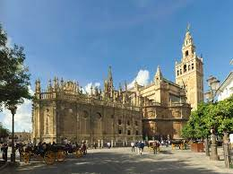

Un dia en Sevilla
Plaza de España
Es un monumento impresionante, el simbolismo es muy fuerte y muy teatral, tiene forma de semicírculo y esta apertura simboliza a España dando la bienvenida a sus antiguas colonias americanas.

Catedral de Nuestra Señora de la Sede de Sevilla
El estilo de esta catedral es gótico, la vista de la Torre Giralda es increíble y además esta Catedral gótica es la más grande del mundo.

Siga el enlace para hacer une visita virtual de la Catedral de Nuestra Señora de la Sede! Enlace visita virtual
Alcázar de Sevilla
El Alcázar de Sevilla es un muy antiguo palacio, efectivamente fecha del siglo XI, y es el último palacio habitado. También como atravesó varias épocas y España fue colonizada, el Alcázar mescla varios estilos artísticos, así como el arte musulmán, gótico, del renacimiento, barroco, romántico…

Metropol Parasol
El Metropol Parasol es un monumento gigante, en efecto mide 28 metros y está hecho de madera, se llama el Metropol Parasol y ofrece un panorama único sobre la ciudad.